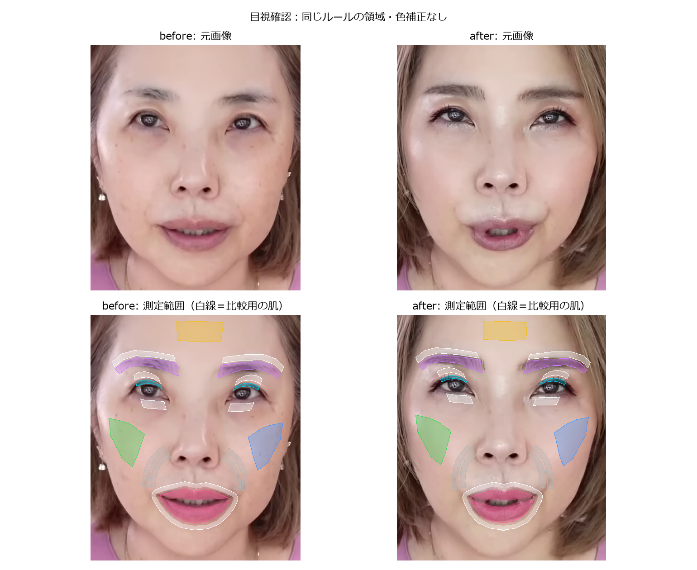
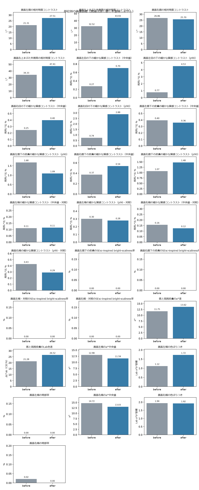
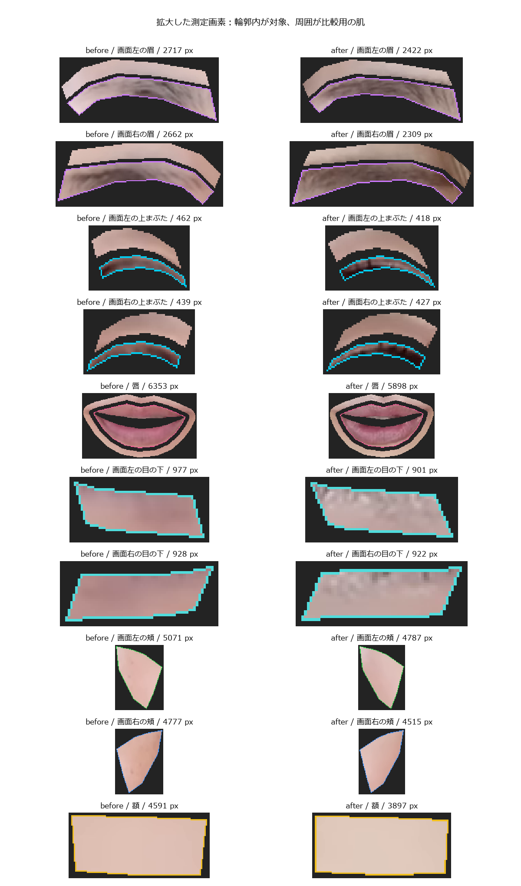

部位別の見た目の変化
比較時刻：02:39.01 → 25:26.71 ／ 左右は画面上の位置です。
目元・眉・唇のコントラスト、目の下の細かな質感コントラスト、頬の色づき・色むら・明部率を同じルールで比較します。
「好印象になったか」の総合点は付けません。自動値の増減を、人の印象評価の理由と照合するための試作です。
総合印象・いきいき感・自然さは人が評価する項目です。ノートブック末尾で任意の目視記録を保存できます。
- 目・眉・唇のROIは新規の自動生成領域です。重ね合わせ画像で位置と遮蔽物を確認してください。
- 視線、表情、照明、ピント、動画圧縮は自動的に補正していません。前後の工程も画像で確認してください。
- 同じ人の2枚の記述比較です。総合的な好印象、化粧の効果、統計的な有意差は判定しません。
- 目の下の高周波指標は細かな線・凹凸・粒状感の見え方を拾いますが、乾燥・シワの診断ではありません。ピント、照明、圧縮、メイク境界も混入します。


小さい領域を拡大して確認

| 指標 | 単位 | before | after | 差 | 状態 |
|---|
| 画面左眉の相対明度コントラスト | L* | 21.31 | 27.51 | +6.21 | 測定値あり・要目視 |
| 画面左上まぶた外側帯の相対明度コントラスト | L* | 32.52 | 43.93 | +11.41 | 測定値あり・要目視 |
| 画面右眉の相対明度コントラスト | L* | 26.86 | 25.70 | -1.17 | 測定値あり・要目視 |
| 画面右上まぶた外側帯の相対明度コントラスト | L* | 34.33 | 47.41 | +13.08 | 測定値あり・要目視 |
| 画面左目の下の細かな質感コントラスト（中央値） | 局所L*比 % | 0.27 | 0.70 | +0.43 | 測定値あり・要目視 |
| 画面左目の下の細かな質感コントラスト（p90） | 局所L*比 % | 0.77 | 4.53 | +3.75 | 測定値あり・要目視 |
| 画面右目の下の細かな質感コントラスト（中央値） | 局所L*比 % | 0.25 | 0.40 | +0.15 | 測定値あり・要目視 |
| 画面右目の下の細かな質感コントラスト（p90） | 局所L*比 % | 0.74 | 2.88 | +2.14 | 測定値あり・要目視 |
| 画面左眉下の皮膚の細かな質感コントラスト（中央値） | 局所L*比 % | 0.40 | 0.36 | -0.04 | 測定値あり・要目視 |
| 画面左眉下の皮膚の細かな質感コントラスト（p90） | 局所L*比 % | 1.68 | 1.09 | -0.59 | 測定値あり・要目視 |
| 画面右眉下の皮膚の細かな質感コントラスト（中央値） | 局所L*比 % | 0.37 | 0.54 | +0.17 | 測定値あり・要目視 |
| 画面右眉下の皮膚の細かな質感コントラスト（p90） | 局所L*比 % | 1.07 | 1.48 | +0.41 | 測定値あり・要目視 |
| 画面左頬の細かな質感コントラスト（中央値・対照） | 局所L*比 % | 0.11 | 0.11 | +0.00 | 測定値あり・要目視 |
| 画面左頬の細かな質感コントラスト（p90・対照） | 局所L*比 % | 0.30 | 0.28 | -0.02 | 測定値あり・要目視 |
| 画面右頬の細かな質感コントラスト（中央値・対照） | 局所L*比 % | 0.16 | 0.12 | -0.03 | 測定値あり・要目視 |
| 画面右頬の細かな質感コントラスト（p90・対照） | 局所L*比 % | 0.43 | 0.29 | -0.14 | 測定値あり・要目視 |
| 額の細かな質感コントラスト（中央値・対照） | 局所L*比 % | 0.01 | 0.03 | +0.01 | 測定値あり・要目視 |
| 額の細かな質感コントラスト（p90・対照） | 局所L*比 % | 0.16 | 0.16 | -0.00 | 測定値あり・要目視 |
| 画面左眉下の皮膚のSEsc-inspired bright-scaliness率 | % | 0.00 | 0.00 | +0.00 | 測定値あり・要目視 |
| 画面右眉下の皮膚のSEsc-inspired bright-scaliness率 | % | 0.00 | 0.00 | +0.00 | 測定値あり・要目視 |
| 画面左頬・対照のSEsc-inspired bright-scaliness率 | % | 0.00 | 0.00 | +0.00 | 測定値あり・要目視 |
| 画面右頬・対照のSEsc-inspired bright-scaliness率 | % | 0.00 | 0.00 | +0.00 | 測定値あり・要目視 |
| 額・対照のSEsc-inspired bright-scaliness率 | % | 0.00 | 0.00 | +0.00 | 測定値あり・要目視 |
| 唇と周囲皮膚のa*差 | a* | 11.75 | 13.62 | +1.88 | 測定値あり・要目視 |
| 唇と周囲皮膚のLab色差 | ΔE*ab（CIE76） | 21.28 | 26.52 | +5.24 | 測定値あり・要目視 |
| 画面左頬のL*中央値 | L* | 77.86 | 77.44 | -0.42 | 測定値あり・要目視 |
| 画面左頬のa*中央値 | a* | 12.98 | 11.59 | -1.39 | 測定値あり・要目視 |
| 画面左頬のb*中央値 | b* | 9.91 | 6.80 | -3.11 | 測定値あり・要目視 |
| 画面左頬の色ばらつき | Lab a*b*距離 | 1.12 | 1.72 | +0.60 | 測定値あり・要目視 |
| 画面左頬の明部率 | % | 0.00 | 0.00 | +0.00 | 測定値あり・要目視 |
| 画面右頬のL*中央値 | L* | 73.47 | 75.34 | +1.87 | 測定値あり・要目視 |
| 画面右頬のa*中央値 | a* | 14.72 | 13.03 | -1.69 | 測定値あり・要目視 |
| 画面右頬のb*中央値 | b* | 13.61 | 10.00 | -3.61 | 測定値あり・要目視 |
| 画面右頬の色ばらつき | Lab a*b*距離 | 1.94 | 1.92 | -0.02 | 測定値あり・要目視 |
| 画面右頬の明部率 | % | 0.02 | 0.00 | -0.02 | 測定値あり・要目視 |
| 額のL*中央値 | L* | 79.54 | 82.41 | +2.87 | 測定値あり・要目視 |
| 額のa*中央値 | a* | 9.12 | 5.94 | -3.19 | 測定値あり・要目視 |
| 額のb*中央値 | b* | 10.08 | 9.39 | -0.69 | 測定値あり・要目視 |
差は after − before。赤み・明暗差や高周波コントラストが増えても、それだけで好ましい・悪いとは判定しません。
明部率は光沢の候補であり、照明や皮膚色の影響を含みます。目の下の高周波指標は乾燥やシワの診断ではありません。
測定ルールと画素数
- 画面左眉の相対明度コントラスト：参照皮膚L*中央値 − 対象L*第25百分位数（p25）。正値は対象が相対的に暗いことを示すだけで、改善判定ではない。毛・影・照明・位置ずれも混入する。 元画像の対象2717画素（必要32画素以上）。参照皮膚1875画素（必要64画素以上）。 対象画素 2717 → 2422
- 画面左上まぶた外側帯の相対明度コントラスト：参照皮膚L*中央値 − 対象L*第25百分位数（p25）。正値は対象が相対的に暗いことを示すだけで、改善判定ではない。毛・影・照明・位置ずれも混入する。 元画像の対象462画素（必要24画素以上）。参照皮膚698画素（必要64画素以上）。 対象画素 462 → 418
- 画面右眉の相対明度コントラスト：参照皮膚L*中央値 − 対象L*第25百分位数（p25）。正値は対象が相対的に暗いことを示すだけで、改善判定ではない。毛・影・照明・位置ずれも混入する。 元画像の対象2662画素（必要32画素以上）。参照皮膚1909画素（必要64画素以上）。 対象画素 2662 → 2309
- 画面右上まぶた外側帯の相対明度コントラスト：参照皮膚L*中央値 − 対象L*第25百分位数（p25）。正値は対象が相対的に暗いことを示すだけで、改善判定ではない。毛・影・照明・位置ずれも混入する。 元画像の対象439画素（必要24画素以上）。参照皮膚717画素（必要64画素以上）。 対象画素 439 → 427
- 画面左目の下の細かな質感コントラスト（中央値）：Gaussian blur σ=1.2px を引いた |L*残差| の中央値を領域L*中央値で正規化。細かな凹凸・線・メイク境界・ピント・圧縮ノイズをまとめて拾う画像指標で、乾燥・シワの診断ではない。 元画像の対象977画素（必要100画素以上）。 対象画素 977 → 901
- 画面左目の下の細かな質感コントラスト（p90）：Gaussian blur σ=1.2px を引いた |L*残差| の90百分位を領域L*中央値で正規化。局所的に強く見える細線や粒状感の候補で、乾燥・シワの診断ではない。 元画像の対象977画素（必要100画素以上）。 対象画素 977 → 901
- 画面右目の下の細かな質感コントラスト（中央値）：Gaussian blur σ=1.2px を引いた |L*残差| の中央値を領域L*中央値で正規化。細かな凹凸・線・メイク境界・ピント・圧縮ノイズをまとめて拾う画像指標で、乾燥・シワの診断ではない。 元画像の対象928画素（必要100画素以上）。 対象画素 928 → 922
- 画面右目の下の細かな質感コントラスト（p90）：Gaussian blur σ=1.2px を引いた |L*残差| の90百分位を領域L*中央値で正規化。局所的に強く見える細線や粒状感の候補で、乾燥・シワの診断ではない。 元画像の対象928画素（必要100画素以上）。 対象画素 928 → 922
- 画面左眉下の皮膚の細かな質感コントラスト（中央値）：Gaussian blur σ=1.2px を引いた |L*残差| の中央値を領域L*中央値で正規化。細かな凹凸・線・メイク境界・ピント・圧縮ノイズをまとめて拾う画像指標で、乾燥・シワの診断ではない。 元画像の対象698画素（必要100画素以上）。 対象画素 698 → 660
- 画面左眉下の皮膚の細かな質感コントラスト（p90）：Gaussian blur σ=1.2px を引いた |L*残差| の90百分位を領域L*中央値で正規化。局所的に強く見える細線や粒状感の候補で、乾燥・シワの診断ではない。 元画像の対象698画素（必要100画素以上）。 対象画素 698 → 660
- 画面右眉下の皮膚の細かな質感コントラスト（中央値）：Gaussian blur σ=1.2px を引いた |L*残差| の中央値を領域L*中央値で正規化。細かな凹凸・線・メイク境界・ピント・圧縮ノイズをまとめて拾う画像指標で、乾燥・シワの診断ではない。 元画像の対象717画素（必要100画素以上）。 対象画素 717 → 667
- 画面右眉下の皮膚の細かな質感コントラスト（p90）：Gaussian blur σ=1.2px を引いた |L*残差| の90百分位を領域L*中央値で正規化。局所的に強く見える細線や粒状感の候補で、乾燥・シワの診断ではない。 元画像の対象717画素（必要100画素以上）。 対象画素 717 → 667
- 画面左頬の細かな質感コントラスト（中央値・対照）：Gaussian blur σ=1.2px を引いた |L*残差| の中央値を領域L*中央値で正規化。眉下ROIと同じ式で撮影条件由来の高周波変化を確認する対照指標。乾燥・シワの診断ではない。 元画像の対象5071画素（必要100画素以上）。 対象画素 5071 → 4787
- 画面左頬の細かな質感コントラスト（p90・対照）：Gaussian blur σ=1.2px を引いた |L*残差| の90百分位を領域L*中央値で正規化。眉下ROIと同じ式で撮影条件由来の局所的な細線・粒状感を確認する対照指標。乾燥・シワの診断ではない。 元画像の対象5071画素（必要100画素以上）。 対象画素 5071 → 4787
- 画面右頬の細かな質感コントラスト（中央値・対照）：Gaussian blur σ=1.2px を引いた |L*残差| の中央値を領域L*中央値で正規化。眉下ROIと同じ式で撮影条件由来の高周波変化を確認する対照指標。乾燥・シワの診断ではない。 元画像の対象4777画素（必要100画素以上）。 対象画素 4777 → 4515
- 画面右頬の細かな質感コントラスト（p90・対照）：Gaussian blur σ=1.2px を引いた |L*残差| の90百分位を領域L*中央値で正規化。眉下ROIと同じ式で撮影条件由来の局所的な細線・粒状感を確認する対照指標。乾燥・シワの診断ではない。 元画像の対象4777画素（必要100画素以上）。 対象画素 4777 → 4515
- 額の細かな質感コントラスト（中央値・対照）：Gaussian blur σ=1.2px を引いた |L*残差| の中央値を領域L*中央値で正規化。眉下ROIと同じ式で撮影条件由来の高周波変化を確認する対照指標。乾燥・シワの診断ではない。 元画像の対象4591画素（必要100画素以上）。 対象画素 4591 → 3897
- 額の細かな質感コントラスト（p90・対照）：Gaussian blur σ=1.2px を引いた |L*残差| の90百分位を領域L*中央値で正規化。眉下ROIと同じ式で撮影条件由来の局所的な細線・粒状感を確認する対照指標。乾燥・シワの診断ではない。 元画像の対象4591画素（必要100画素以上）。 対象画素 4591 → 3897
- 画面左眉下の皮膚のSEsc-inspired bright-scaliness率：Visioscan SEscで公開されている閾値定義を参考に、ROI平均grayの19/13倍より明るく、gray 240以下の画素割合を計算する。通常のBGR動画をOpenCV grayへ変換した研究用の近似指標で、Visioscan専用UVA撮影によるSEscそのものではなく、乾燥・鱗屑の診断値でもない。 元画像の対象698画素（必要100画素以上）。 対象画素 698 → 660
- 画面右眉下の皮膚のSEsc-inspired bright-scaliness率：Visioscan SEscで公開されている閾値定義を参考に、ROI平均grayの19/13倍より明るく、gray 240以下の画素割合を計算する。通常のBGR動画をOpenCV grayへ変換した研究用の近似指標で、Visioscan専用UVA撮影によるSEscそのものではなく、乾燥・鱗屑の診断値でもない。 元画像の対象717画素（必要100画素以上）。 対象画素 717 → 667
- 画面左頬・対照のSEsc-inspired bright-scaliness率：Visioscan SEscで公開されている閾値定義を参考に、ROI平均grayの19/13倍より明るく、gray 240以下の画素割合を計算する。通常のBGR動画をOpenCV grayへ変換した研究用の近似指標で、Visioscan専用UVA撮影によるSEscそのものではなく、乾燥・鱗屑の診断値でもない。 元画像の対象5071画素（必要100画素以上）。 対象画素 5071 → 4787
- 画面右頬・対照のSEsc-inspired bright-scaliness率：Visioscan SEscで公開されている閾値定義を参考に、ROI平均grayの19/13倍より明るく、gray 240以下の画素割合を計算する。通常のBGR動画をOpenCV grayへ変換した研究用の近似指標で、Visioscan専用UVA撮影によるSEscそのものではなく、乾燥・鱗屑の診断値でもない。 元画像の対象4777画素（必要100画素以上）。 対象画素 4777 → 4515
- 額・対照のSEsc-inspired bright-scaliness率：Visioscan SEscで公開されている閾値定義を参考に、ROI平均grayの19/13倍より明るく、gray 240以下の画素割合を計算する。通常のBGR動画をOpenCV grayへ変換した研究用の近似指標で、Visioscan専用UVA撮影によるSEscそのものではなく、乾燥・鱗屑の診断値でもない。 元画像の対象4591画素（必要100画素以上）。 対象画素 4591 → 3897
- 唇と周囲皮膚のa*差：唇a*中央値 − 周囲皮膚a*中央値。口腔内・口の境界線は除外。正負に良し悪しを割り当てない。 元画像の対象6353画素（必要60画素以上）。参照皮膚4415画素（必要64画素以上）。 対象画素 6353 → 5898
- 唇と周囲皮膚のLab色差：唇と周囲皮膚のL*・a*・b*各中央値のユークリッド距離。口腔内を除外した領域間の色差で、塗布効果や知覚的な改善量を保証しない。 元画像の対象6353画素（必要60画素以上）。参照皮膚4415画素（必要64画素以上）。 対象画素 6353 → 5898
- 画面左頬のL*中央値：固定ROI内の中央値。部位の色と撮影条件の確認用で、照明・影・化粧の影響を分離しない。 元画像の対象5071画素（必要100画素以上）。 対象画素 5071 → 4787
- 画面左頬のa*中央値：固定ROI内の中央値。部位の色と撮影条件の確認用で、照明・影・化粧の影響を分離しない。 元画像の対象5071画素（必要100画素以上）。 対象画素 5071 → 4787
- 画面左頬のb*中央値：固定ROI内の中央値。部位の色と撮影条件の確認用で、照明・影・化粧の影響を分離しない。 元画像の対象5071画素（必要100画素以上）。 対象画素 5071 → 4787
- 画面左頬の色ばらつき：a*b*各中央値からの色平面距離の中央値（robust分散の代理量）。明度L*は含めない。値の大小を肌の良し悪しとみなさない。 元画像の対象5071画素（必要100画素以上）。 対象画素 5071 → 4787
- 画面左頬の明部率：ROI内L*中央値 + 8以上の画素割合。光沢の候補量であり、照明・影・形状・化粧の影響が混入する。0%は閾値を超える画素がないことを示し、光沢がないという意味ではない。光沢量の測定や改善判定ではない。 元画像の対象5071画素（必要100画素以上）。 対象画素 5071 → 4787
- 画面右頬のL*中央値：固定ROI内の中央値。部位の色と撮影条件の確認用で、照明・影・化粧の影響を分離しない。 元画像の対象4777画素（必要100画素以上）。 対象画素 4777 → 4515
- 画面右頬のa*中央値：固定ROI内の中央値。部位の色と撮影条件の確認用で、照明・影・化粧の影響を分離しない。 元画像の対象4777画素（必要100画素以上）。 対象画素 4777 → 4515
- 画面右頬のb*中央値：固定ROI内の中央値。部位の色と撮影条件の確認用で、照明・影・化粧の影響を分離しない。 元画像の対象4777画素（必要100画素以上）。 対象画素 4777 → 4515
- 画面右頬の色ばらつき：a*b*各中央値からの色平面距離の中央値（robust分散の代理量）。明度L*は含めない。値の大小を肌の良し悪しとみなさない。 元画像の対象4777画素（必要100画素以上）。 対象画素 4777 → 4515
- 画面右頬の明部率：ROI内L*中央値 + 8以上の画素割合。光沢の候補量であり、照明・影・形状・化粧の影響が混入する。0%は閾値を超える画素がないことを示し、光沢がないという意味ではない。光沢量の測定や改善判定ではない。 元画像の対象4777画素（必要100画素以上）。 対象画素 4777 → 4515
- 額のL*中央値：固定ROI内の中央値。部位の色と撮影条件の確認用で、照明・影・化粧の影響を分離しない。 元画像の対象4591画素（必要100画素以上）。 対象画素 4591 → 3897
- 額のa*中央値：固定ROI内の中央値。部位の色と撮影条件の確認用で、照明・影・化粧の影響を分離しない。 元画像の対象4591画素（必要100画素以上）。 対象画素 4591 → 3897
- 額のb*中央値：固定ROI内の中央値。部位の色と撮影条件の確認用で、照明・影・化粧の影響を分離しない。 元画像の対象4591画素（必要100画素以上）。 対象画素 4591 → 3897